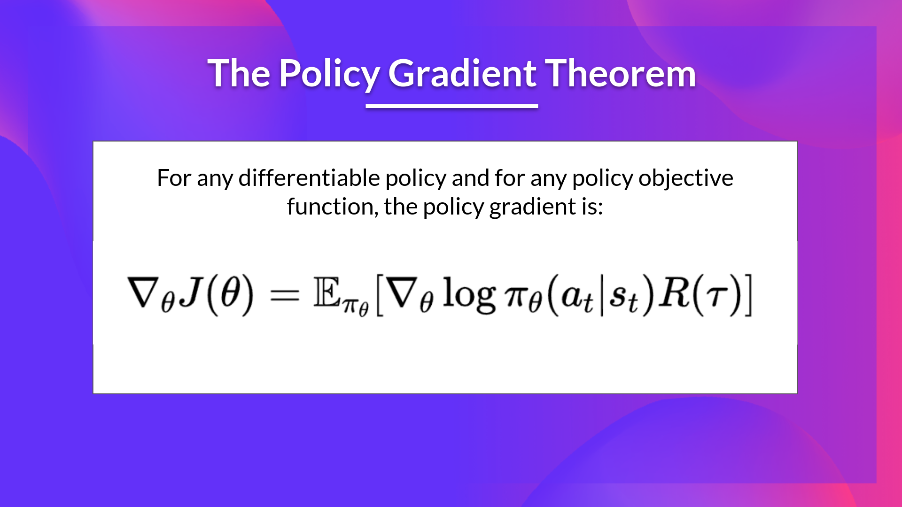
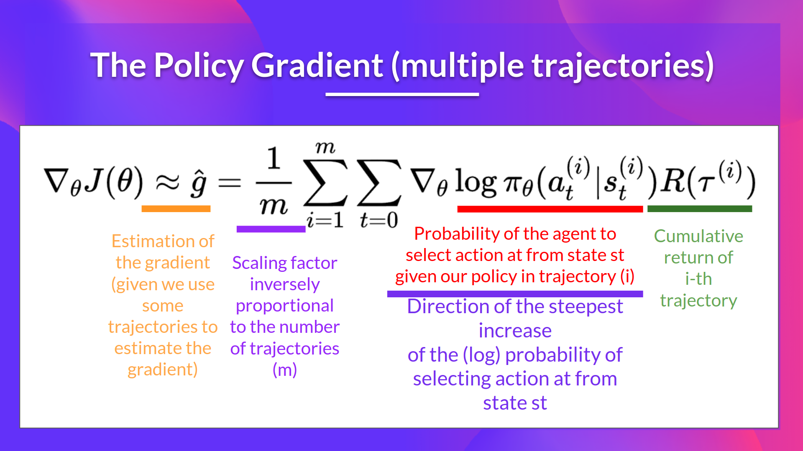
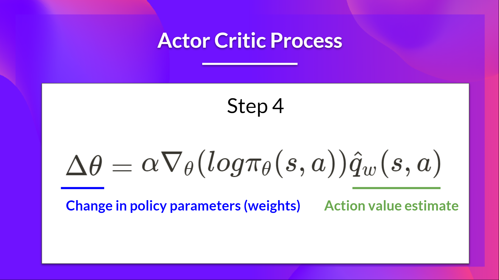
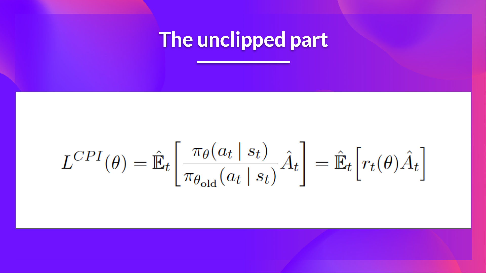
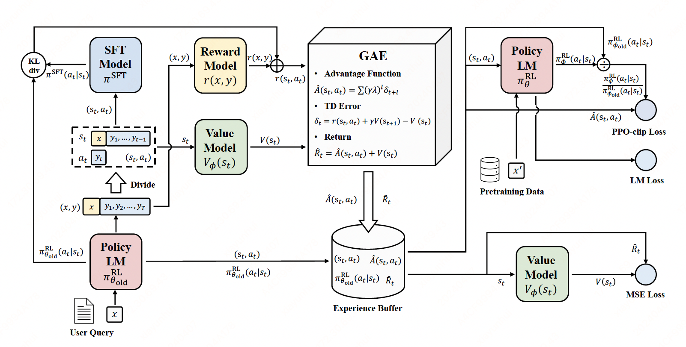

PPO#
Note
RLHF framework:
Rollout: The language model generates a response based on query.
Evaluation: The query and response are evaluated with a function, model, human feedback or some combination of them. This process should yield a scalar value for each query/response pair.
Optimization: In the optimisation step the query/response pairs are used to calculate the log-probabilities of the tokens in the sequences. This is done with the model that is trained and a reference model. The KL-divergence between the two outputs is used as an additional reward signal to make sure the generated responses don’t deviate too far from the reference language model. The active language model is then trained with PPO.
PPO algorithm#
Policy gradient#
Here, we consider the case of a stochastic, parameterized policy \(\pi_{\theta}\), We aim to maximize the expected return

The simplest policy gradient:

Actor-critic#
Using a value function to predict \(R(\tau)\):

PPO#
Tip
Off policy: The agent learned and the agent interacting with the environment is different. Our goal is to use the sample from \(\theta_{\text{old}}\) to train \(\theta\), \(\theta_{\text{old}}\) is fixed, so we can reuse the sample data.
Using importance sampling:
So the off policy objective can be expressed as:

By clipping the ratio, we ensure that we do not have a too large policy update because the current policy can’t be too different from the older one.

Dive into PPO Trainer#

PPO in RLHF workflow (no LM Loss):
1. Rollout#
\(x\) is sampled from the user query dataset.
With LLM model \(\pi_{\theta_{\text{old}}}^{\text{RL}}\) and query \(x\), generate response \(y\).
\(s_t = (x,y_1,\dots,y_{t-1})\) and \(a_t=y_t\).
code:
response_tensors = ppo_trainer.generate(query_tensors, **generation_kwargs)
2. Evaluate#
We use the reward model to Compute \(r(x, y)\).
#### Compute reward score
texts = [q + r for q, r in zip(batch["query"], batch["response"])]
pipe_outputs = reward_model(texts)
rewards = [torch.tensor(output[1]["score"]) for output in pipe_outputs]
3. Old policy logprobs and values#
Compute \(\pi_{\theta_{\text{old}}}^{\text{RL}}(a_t|s_t)\) and \(V(s_t)\).
with torch.no_grad():
all_logprobs, logits_or_none, values, masks = self.batched_forward_pass(
self.model,
queries,
responses,
model_inputs,
response_masks=response_masks,
return_logits=full_kl_penalty,
)
logits, _, values = model(**input_kwargs)
4. Ref(SFT) model logprobs#
Compute \(\pi^{\text{SFT}}(a_t|s_t)\)
with self.optional_peft_ctx():
ref_logprobs, ref_logits_or_none, _, _ = self.batched_forward_pass(
self.model if self.is_peft_model else self.ref_model,
queries,
responses,
model_inputs,
return_logits=full_kl_penalty,
)
5. Compute per token rewards and KL-penalty.#
Per token KL-penalty \(\text{KL}(t) = \log({\pi_{\theta_{\text{old}}}(a_t|s_t)^{\text{RL}}}/{\pi^{\text{SFT}}(a_t|s_t)})\)
Compute \(r(s_t, a_t)\)
If \(t\) is not the last token \(r(s_t, a_t) = -\beta\text{KL}(t)\)
If \(t\) is the last token \(r(s_t, a_t) = r(x, y) - \beta\text{KL}(t)\)
\(\sum_{t=1}^{T}r(s_t, a_t) = r(x, y) - \beta\log({\pi_{\theta_{\text{old}}}(y|x)^{\text{RL}}}/{\pi^{\text{SFT}}(y|x)})\) is the reward PPO aims to optimize.
def compute_rewards(
self,
scores: torch.FloatTensor,
logprobs: torch.FloatTensor,
ref_logprobs: torch.FloatTensor,
masks: torch.LongTensor,
):
"""
Compute per token rewards from scores and KL-penalty.
"""
rewards, non_score_rewards, kls = [], [], []
for score, logprob, ref_logprob, mask in zip(scores, logprobs, ref_logprobs, masks):
# compute KL penalty (from difference in logprobs)
kl = self._kl_penalty(logprob, ref_logprob)
kls.append(kl)
non_score_reward = -self.kl_ctl.value * kl
non_score_rewards.append(non_score_reward)
reward = non_score_reward.clone()
last_non_masked_index = mask.nonzero()[-1]
# reward is preference model score + KL penalty
reward[last_non_masked_index] += score
rewards.append(reward)
return torch.stack(rewards), torch.stack(non_score_rewards), torch.stack(kls)
def _kl_penalty(self, logprob: torch.FloatTensor, ref_logprob: torch.FloatTensor) -> torch.FloatTensor:
if self.config.kl_penalty == "kl":
return logprob - ref_logprob
6. Compute Advantages using GAE#
TD error \(\delta_t = r(s_t, a_t) + \gamma V(s_{t+1}) - V(s_t)\)
The Generalized Advantage Estimator \(\hat{A}(s_t, a_t) = \sum(\gamma\lambda)^{l}\delta_{t+l}^{V}\), it is a technique to make compromise between bias and variance in estimating \(A(s_{t}, a_{t})\), controlled by parameter \(\gamma\) and \(\lambda\).
\(\lambda=0\): \(\hat{A}(s_t, a_t) = r(s_t, a_t) + \gamma V(s_{t+1}) - V(s_t)\), it has high bias low variance.
\(\lambda=1\): \(\hat{A}(s_t, a_t) = \sum_{l=0}^{\infty}\gamma^{l}r(s_{t+l}, a_{t+l}) - V(s_{t})\), it has high variance due to the sum of terms.
\(\hat{R}_{t} = \hat{A}(s_t, a_t) + V(s_t)\) is the estimated reward to go.
for t in reversed(range(gen_len)):
nextvalues = values[:, t + 1] if t < gen_len - 1 else 0.0
delta = rewards[:, t] + self.config.gamma * nextvalues - values[:, t]
lastgaelam = delta + self.config.gamma * self.config.lam * lastgaelam
advantages_reversed.append(lastgaelam)
advantages = torch.stack(advantages_reversed[::-1]).transpose(0, 1)
returns = advantages + values
7. Experience buffer and minibatch#
Collect batch experience buffer \(\{(a_t,s_t), \pi_{\theta_{\text{old}}}^{\text{RL}}(a_t, s_t), \hat{A}(s_t, a_t), \hat{R}_{t}\}\)
Random sample from the experience buffer, train minibatches.
for _ in range(self.config.ppo_epochs):
if early_stop:
break
b_inds = np.random.permutation(bs)
for backward_batch_start in range(0, bs, self.config.backward_batch_size):
backward_batch_end = backward_batch_start + self.config.backward_batch_size
backward_batch_inds = b_inds[backward_batch_start:backward_batch_end]
for mini_batch_start in range(0, self.config.backward_batch_size, self.config.mini_batch_size):
# train minibatch
8. New Policy Sampling#
We will train many minibatches \(\theta_{\text{old}}^{\text{RL}}=\theta_0,\theta_1,\theta_2,\dots\) within the loop
Sample from the newest policy \(\pi_{\theta}^{\text{RL}}\) to get \(\pi_{\theta}^{\text{RL}}(a_t|s_t)\) and \(V_{\phi}\).
logprobs, logits, vpreds, _ = self.batched_forward_pass(
self.model,
mini_batch_dict["queries"],
mini_batch_dict["responses"],
model_inputs,
return_logits=True,
)
9. Policy gradient loss#
pg_losses = -advantages * ratio
pg_losses2 = -advantages * torch.clamp(ratio, 1.0 - self.config.cliprange, 1.0 + self.config.cliprange)
pg_loss = masked_mean(torch.max(pg_losses, pg_losses2), mask)
pg_clipfrac = masked_mean(torch.gt(pg_losses2, pg_losses).float(), mask)
Caution
\(\frac{1}{T}\) introduce length bias in this PPO implementation.
10. Value function loss#
vf_losses1 = (vpreds - returns) ** 2
11. Optimization#
self.model.train()
loss_p, loss_v, train_stats = self.loss(
old_logprobs, values, logits, vpreds, logprobs, mask, advantages, returns
)
loss = loss_p + loss_v
self.accelerator.backward(loss)
if self.config.max_grad_norm is not None:
if self.accelerator.sync_gradients:
self.accelerator.clip_grad_norm_(self.model_params, self.config.max_grad_norm)
self.optimizer.step()
Pseudocode#
def ppo_train(model, reward_model, dataiter):
# Fix ref model
ref_model = model.clone()
optimizer = torch.optim.AdamW(model.parameters(), lr=lr)
for step in range(max_steps):
queries = next(dataiter)
responses = model.generate(queries)
scores = reward_model.score(queries, responses)
all_logprobs, values = model.batch_forward(queries, responses)
ref_logprobs, _ = ref_model.batch_forward(queries, responses)
# KL + rewards
rewards = compute_rewards(scores, all_logprobs, ref_logprobs)
all_advantages, all_returns = compute_advantages(values, rewards)
for _ in range(ppo_epochs):
for _ in range(num_minibatches):
minibatch_queries = queries[start: end]
minibatch_responses = responses[start: end]
old_logprobs = all_logprobs[start: end]
advantages = all_advantages[satrt: end]
returns = all_returns[start: end]
logprobs, vpreds = model.batch_forward(minibatch_queries, minibatch_responses)
model.train()
loss_p = policy_loss(logprobs, old_logprobs, advantages)
loss_v = value_loss(vpreds, returns)
loss = loss_p + loss_v
loss.backward()
optimizer.step()